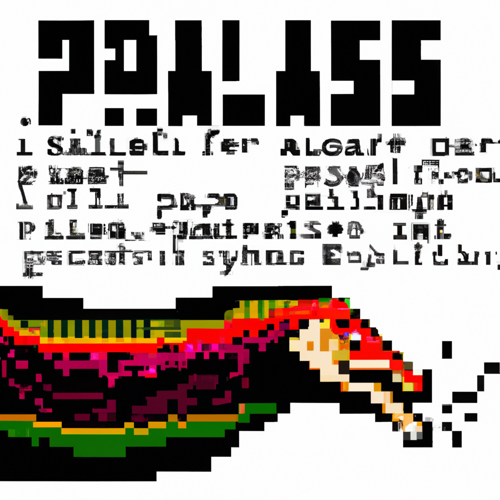

Why the Python programming language will make the SAS programming language obsolete
SAS has been the go-to programming language for many data scientists and analytics professionals for decades. Since its inception in 1976, SAS has provided an extensive library of tools and algorithms for data science and analytics. Despite its convenience, SAS has its shortcomings.
First, SAS is costly. The software itself is expensive, and SAS programming requires significant time and effort to learn and master. Additionally, SAS is not open source, meaning that you have to purchase the software and go through the SAS certification process to use it.
Second, SAS is slow compared to other programming languages. It takes longer to run a program in SAS than it would take in Python or R. This can be a major limitation in terms of data analysis, especially when dealing with large datasets.
Third, SAS is limited in terms of scalability. SAS programs can only be run on a single machine, as opposed to distributed computing, which is possible with Python and R. This limits the amount of data that can be processed and analyzed in a given amount of time.
Finally, SAS is not as widely used as other programming languages, meaning that there is less of a support network for SAS programmers. Although SAS has a large user base, it is significantly smaller than the user base for Python and R.
These factors make Python the ideal language for data science and analytics. Python is open source and free to use, making it accessible to everyone. It is also highly scalable, meaning that it can be used to process large datasets with ease. Additionally, Python is extremely fast, allowing for quick analysis and processing of data. Finally, Python has a large and growing user base, meaning that there is a large support network for Python developers.
Overall, Python is a powerful and versatile language for data science and analytics. It has many advantages over SAS, and I believe that it will eventually replace SAS as the go-to language for data science and analytics.